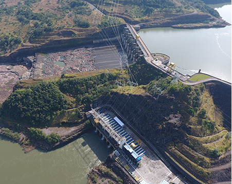

Energia Hidroelétrica
O que é geração de energia hidroelétrica?
A energia hidroelétrica é a principal forma de produção de energia no Brasil, sendo a terceira no mundo.
Ocorrendo nas usinas hidrelétricas, é gerada a partir da transformação da energia potencial da agua em energia cinética
Mesmo sendo uma fonte de energia renovável e limpa, a construção das hidrelétricas é responsável por impactos ambientais e sociais que possivelmente podem alterar os ecossistemas.
Vantagens
- Gerada de uma fonte renovável;
- Energia limpa;
- Barata.
Desvantagens
- Traz consigo impactos ambientais e sociais;
- Processo custoso.

Fonte: Usina Machadinho
Fonte: Usina Machadinho